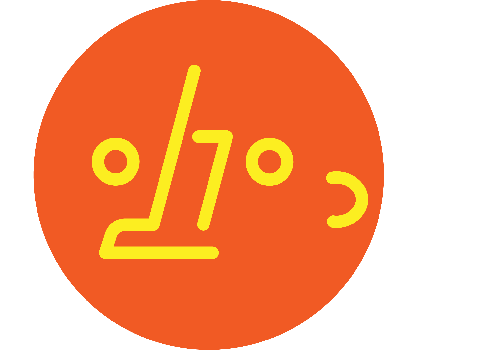
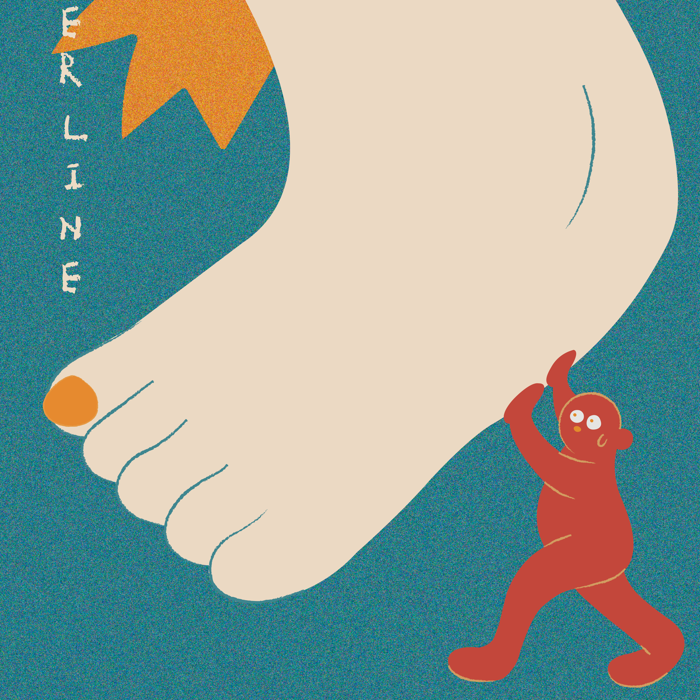

01 — 語言學
聲音相近，意義轉彎
諧音利用音節相同或相似，讓一句話同時打開兩種解讀。聲調、腔調與語境，都是笑點成立的關鍵。
音韻雙關語境
諧咖 PUNDERLINE投稿一個梗 ↗
諧音利用音節相同或相似，讓一句話同時打開兩種解讀。聲調、腔調與語境，都是笑點成立的關鍵。
音韻雙關語境短、好懂、容易改寫，讓諧音梗特別適合社群傳播。迷因在分享與再創作中，成為群體認同的暗號。
迷因擴散再創作台語、華語、英語交錯，招牌、廣告、聊天都能長出新梗。諧音記錄著地方生活，也映照我們共同的幽默感。
語言接觸地方感生活文化我們把雙關放進招牌、廣告和日常對話。這個轉彎，藏著怎樣的語言習慣？
把生活裡撿到的諧音，分享給諧咖研究所。